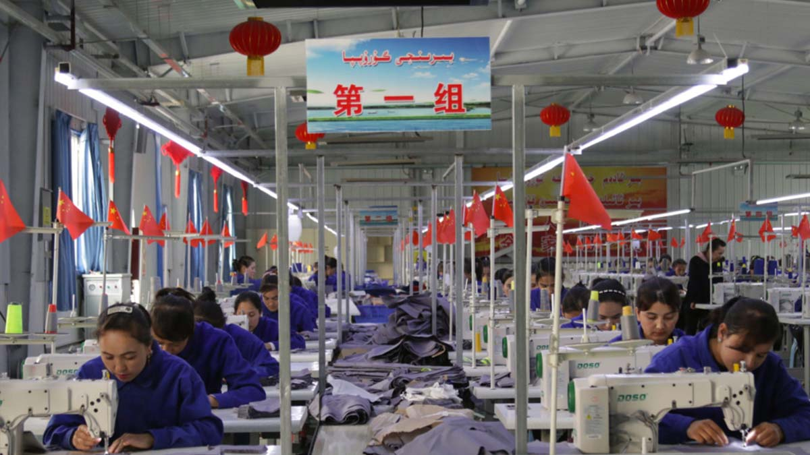
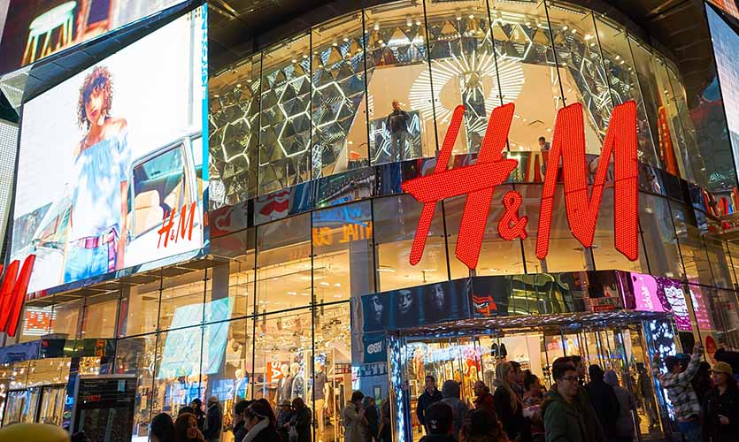

Teen Vogue editor resigned over racist and homophobic tweets
2 weeks ago Alexi McCammond was supposed to start at the Condé Nast publication as a Teen Vogue editor.
But, due to racist and homophobic tweets she made as a teen the onboarding process halted. Out of loop?
No worries, all in the bullet points.
- Offensive tweets resurfaced just days after Cone Naste named her the editor.They included comments on the appearance of Asian features, derogatory stereotypes about Asians and slurs for gay people.
- In 2019 Ms. Cammond has apologized for the tweets and deleted them. But, with the new position screenshots recirculated and her position at Conde Nast became shaky.
- Within days staff at Teen Vogue to social media to complain about Ms. Cammond and soon after Ms. Cammond resigned and apologized, again, on Twitter. NY Times
H&M, Nike and Adidas Under Pressure for Criticism of China's Labour Conditions

H&M, Nike and Adidas, have been criticized on Chinese social media for past statements they have made expressing concern over labour conditions in Xinjiang province.
Details summarized in bullet points.
- Internet users in China targeted the Better Cotton Initiative (BCI), a group that encourages sustainable cotton production which said that they were suspending its approval of cotton sourced from Xinjiang for the 2020-2021 season, citing human rights concerns.
- BCI members include Nike, Adidas, H&M and Japan’s Fast Retailing.
- The ruling party’s Youth League recently called for a boycott of H&M after the retailer announced it would no longer buy cotton from Xinjiang.
- Chinese officials have warned western companies that “ era of bullying” by foreign powers is over.
- Xinjiang government spokesman Xu Guixiang said companies wielding the “big stick of sanctions” against the northwestern region would only hurt themselves. - Reuters
H&M vanished from maps and apps in China

After warnings from the public and officials in China H&M, last week mysteriously vanished from apps and maps in China. Details summarized in bullet points:
- Chinese regulators have demanded that H&M amend a map on their website. It’s unclear how many and which amendments were requested. We just know for sure that it was updated.
- Late last week Chinese regulators anounced that H&M has updated their map to follow Chinese regulations.
- The announcement gave no details about the map, but brands have been pressured to change how Taiwan is depicted on their websites. Chinese government doesn't recoginze Taiwan as country and often insists for the companies that want business with China to respect their political views.
- In addition to that H&M vanished from apps and maps in China last week.
- H&M’s approximately 500 stories in China didn’t appear on ride-hailing app Didi Chuxing or map services operated by Alibaba and Baidu. - news.com.au